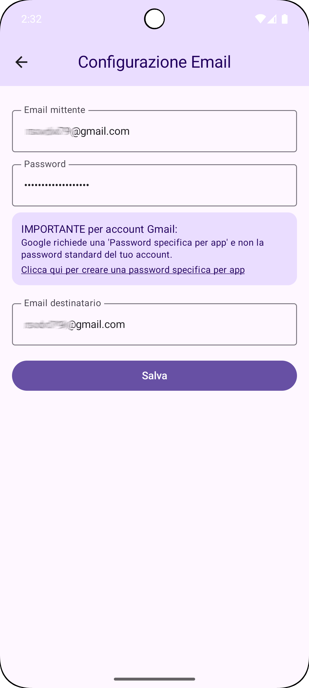

Sincronizza i tuoi SMS tra telefono e altri dispositivi tramite email. Sistema di filtri personalizzabile.
SMS TO mail trasferisce automaticamente i messaggi SMS ricevuti sul telefono alla casella email configurata, così puoi leggerli e archiviarli da un computer, tablet o altro telefono. È pensata per la sincronizzazione personale tra dispositivi.



La funzione principale dell'app è la sincronizzazione/trasferimento degli SMS tra dispositivi: ti permette di leggere e archiviare i tuoi messaggi anche quando non hai il telefono a portata di mano, semplicemente consultando la tua casella email da computer, tablet o un altro smartphone.
Aggiornamento SMS to Mail - 2 giugno 2025
Novità:
• Migliorata stabilità generale dell'applicazione
• Supporto per nuovi formati SMS
• Interfaccia utente rinnovata
• Ottimizzazione delle prestazioni
• Ridotto consumo della batteria
Funzionalità esistenti:
• Inoltro automatico SMS a email
• Sistema di filtri avanzato
• Facile configurazione provider email
• Avvio automatico al riavvio dispositivo
• Ottimizzato per il consumo della batteria
Grazie per aver scelto SMS to Mail!